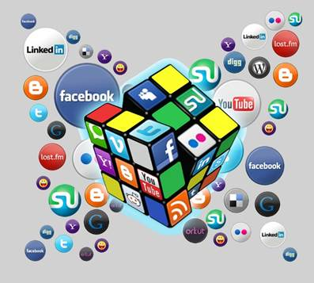

Internet se ha convertido en una herramienta fundamental en nuestra vida cotidiana. Hoy en día se utiliza para todo, desde realizar compras hasta comunicarse con amigos y familiares. Desde su nacimiento, este sistema informático ha evolucionado para ofrecer diversos servicios que han facilitado la vida de millones de usuarios alrededor del mundo.
Uno de los servicios más populares de Internet es el correo electrónico. A través de esta herramienta, se puede enviar y recibir mensajes de correo electrónico en tiempo real, sin importar la distancia geográfica entre los usuarios. Esta herramienta es de gran utilidad tanto para usuarios particulares como para empresas, ya que les permite comunicarse de manera eficiente y económica con sus clientes o proveedores.
Otro servicio que ofrece Internet es la mensajería instantánea. Con esta herramienta, se pueden enviar y recibir mensajes en tiempo real al instante, de manera que podemos comunicarnos con amigos, familiares o compañeros de trabajo de manera ágil y efectiva. Además, algunas aplicaciones de mensajería instantánea permiten compartir archivos, fotos y vídeos, lo que la convierte en una herramienta muy versátil y útil.
La herramienta de videoconferencia también ha ganado una gran popularidad. A través de ella, se pueden realizar reuniones de trabajo o conversaciones familiares con personas que se encuentran a miles de kilómetros de distancia. Gracias a Internet, es posible conectarse en tiempo real con amigos, familiares, compañeros de trabajo o clientes, lo que se convierte en una valiosa herramienta de trabajo y socialización.
Otro de los servicios que ha revolucionado la industria es la tecnología de la educación a distancia. Actualmente, muchas universidades e instituciones educativas ofrecen cursos en línea a través de Internet. Esto permite a las personas acceder a una oferta educativa más diversa y asequible, eliminando la necesidad de trasladarse a una universidad física. Además, esta modalidad de educación se ha convertido en una herramienta de capacitación en línea para empresas y profesionales, lo que les permite mejorar sus habilidades y competencias laborales en su propio tiempo y desde cualquier lugar.
Otro gran servicio de Internet es el comercio electrónico, lo que permite realizar compras en línea en cualquier momento del día. Actualmente, una gran cantidad de empresas ofrecen sus productos y servicios a través de sus sitios web, por lo que los usuarios pueden explorar y comparar precios y características sin tener que salir de su casa. Esto puede resultar muy conveniente y seguro, ya que permite a los usuarios comprar desde la comodidad de su hogar y sin tener que lidiar con la aglomeración de tiendas físicas.
Por otro lado, también existe el mercado de la banca en línea, permitiendo a los usuarios realizar transacciones financieras electrónicas – desde el pago de sus facturas hasta transferencias bancarias y consultas de saldo – convirtiéndose en una útil y segura herramienta de gestión financiera para individuos y empresas.
Otro de las herramientas de Internet que ha ido ganando popularidad son los blogs y las redes sociales. A través de estas plataformas, los usuarios pueden compartir sus ideas, pensamientos y experiencias con un gran número de personas de todas partes del mundo. Esto se ha convertido en una herramienta efectiva para la creación de comunidades virtuales y el intercambio de información.
En resumen, los servicios de Internet han ido evolucionando para satisfacer las necesidades de los usuarios. Desde el correo electrónico hasta las redes sociales, la tecnología de la educación a distancia y el comercio electrónico, todas estas herramientas han tenido un gran impacto en la forma en que las personas se comunican, aprenden, trabajan y compran. Por lo tanto, es importante que los usuarios estén informados y capacitados para hacer un uso responsable y seguro de estas herramientas del internet.